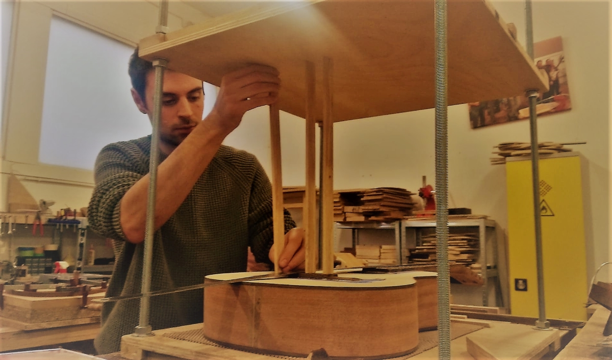

Voisil Guitare: La Lutherie accessible à tous.
Faire appel aux services d'un luthier pour entretenir, réparer ou fabriquer son instrument de musique est un service encore peu accessible de par ses couts financiers importants. L'importation des matériaux, notamment le bois, et l'achat d'outils représentent des couts considérables dans la réalisation d'une guitare. Afin de vous proposer des prix plus abordables, j'ai décidé de fabriquer mes propres outils de travail et privilégier les produits locaux pour la fabrication et l'entretien de vos guitares (bois, verni..).
Je peux également travailler avec des bois et du matériel très haut de gamme pour les personnes ayant un budget plus conséquent.
Tous les services proposés sont garantis 2 ans.
J'offre également une garantie à vie (sans frais cachés) pour vos projets de créations de guitares.
| Prestation | Type de guitare | ||
|---|---|---|---|
| Accoustique | Electrique | Basse | |
| Réglage standard. | 40€ | 50€ | 50€ |
| Planimétrie + réglage | 110€ | 100€ | 100€ |
| Détection de panne électronique | 20€ | 20€ | |
| Electronique : switch, potentiomètre | 20€ | 20€ | |
| Electronique : remplacement d'un micro | 25€ | 25€ | |
| Remplacement d'un sillet | 40€ | 40€ | 40€ |
| Remplacement des mécaniques d'accordage | 40€ | 40€ | 40€ |
| Polissage de la table | 120€ | 120€ | 120€ |
prix affichés TTC*